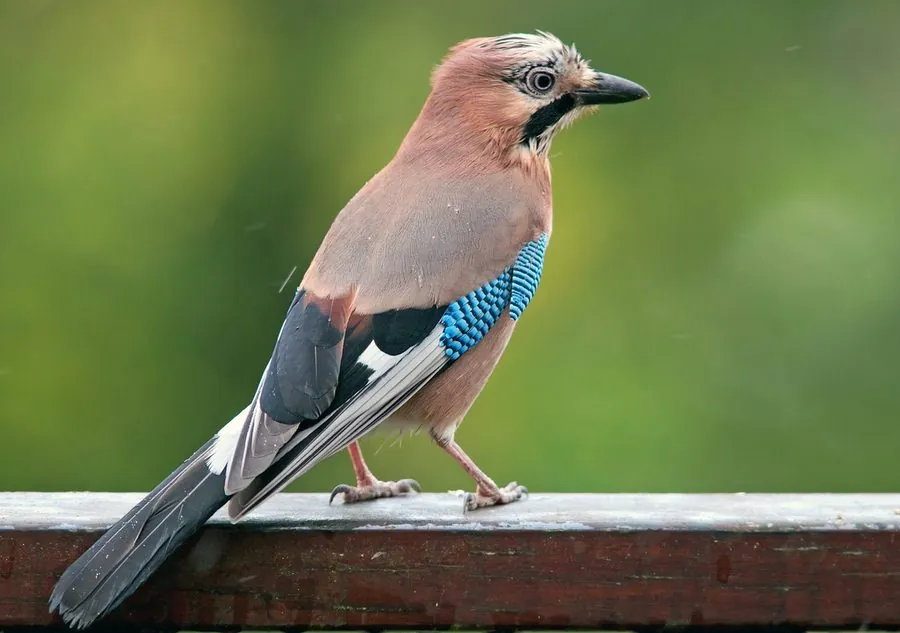

鸟类 · 动物界
松鸦 Garrulus glandarius

粉褐色身体的鸦科鸟类，翼上有一块蓝白相间的醒目斑块，腰白尾黑。秋天大量搬运橡子埋藏，是森林更新的重要传播者。
- 分类
- 门脊索动物门纲鸟纲目雀形目科鸦科属松鸦属
- 栖息环境
- 阔叶林、针阔混交林、公园、果园与林缘，偏好有栎树等结实乔木的环境。
- 地理分布
- 欧亚大陆广布，中国从东北至西南、华南的林区均有分布。
- 保护级别
- IUCN 红色名录列为无危（LC）；中国列入“三有”陆生野生动物名录。
物种志
松鸦体长约三十二至三十七厘米，体重一百三十至一百九十克。通体粉褐至红褐色，头顶有黑色纵纹，嘴侧有一道粗著的黑色髭纹，喉部白色，腰部和尾下覆羽白色，尾羽黑色。翼上覆羽有一块由亮蓝色、黑色和白色组成的斑块，飞行时尤为醒目。虹膜浅褐，嘴黑色，脚粉褐色。雌雄羽色相似。
它栖息于阔叶林、针阔混交林、公园与果园，性机警，常单独或成对在树冠层活动，取食橡子、榛子、浆果、昆虫、鸟卵和雏鸟。秋季它会大量收集橡子，分散埋藏在落叶层或土壤中，冬季依靠记忆取回，未取回的种子萌发后促进森林更新。繁殖期在树上筑巢，每窝产卵四至六枚。松鸦还能模仿猛禽叫声和其他鸟类鸣声。它广泛分布于欧亚大陆，中国大部分林区可见，列入“三有”名录。
形态与习性
- 体长32–37 厘米
- 体重130–190 克
- 食性橡子、坚果、浆果、昆虫与鸟卵
- 繁殖树上营巢，每窝 4–6 枚
- 特征翼上蓝白黑三色斑块
- 保护级别IUCN 无危；“三有”动物
趣味知识
- 秋天把橡子分散埋进落叶层，靠记忆过冬取食。
- 能模仿普通鵟等猛禽的叫声吓退竞争者。
- 翼上蓝白斑块在林中飞行时像一道闪光。